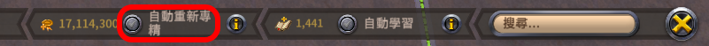
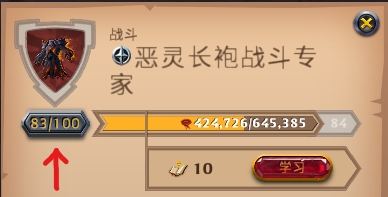
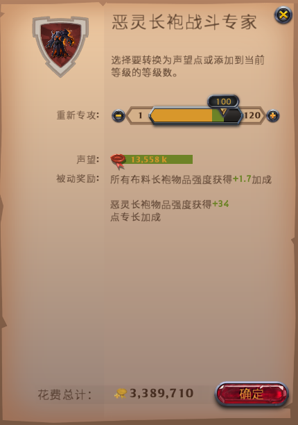

戰鬥聲望點
戰鬥聲望點(也稱自由點)獲取、使用、自動重新專精。
獲取
裝備中的頭盔、護甲、鞋子、武器、副手，如果該物品內圈或外圈達到 Lv100 或以上，
則PvE聲望會以一定比例轉為戰鬥聲望點(聲望溢出)。
聲望溢出轉換為戰鬥聲望點的比例：(內外圈皆同)
| 裝備類型 | 轉換比例 |
| 頭盔 | *0.025 |
| 護甲 | *0.05 |
| 鞋子 | *0.025 |
| 武器 | *0.1 |
| 副手 | *0.005 |
某物品如果內外圈皆為 Lv100 或以上，獲得的戰鬥聲望點會
重複計算。
自動重新專精

如果開啟，獲得的戰鬥聲望點提高至 4 倍，但是每獲得 1 點戰鬥聲望點，會消耗 0.9 銀幣。
使用
點擊裝備的內圈或外圈圖示，進到聲望進度條介面，按下等級按鈕。(至少要Lv1)

進入到升級介面

把拉桿往右拉或是點擊"+"按鈕，可以花費戰鬥聲望點直接升級內外圈裝備的等級。
裝備的外圈等級到Lv100就無法經由PvE聲望直接升級了，僅能使用戰鬥聲望點升級到Lv120。
每 1 點戰鬥聲望點可以轉換成：(內外圈皆同)
| 裝備類型 | 等級進度條增加 |
| 頭 | 8 聲望 |
| 甲 | 4 聲望 |
| 鞋 | 8 聲望 |
| 武器 | 2 聲望 |
| 副手 | 40 聲望 |
把拉桿往左拉或是點擊"-"按鈕，可以花費銀幣將
等級進度條聲望轉為
戰鬥聲望點，
會消耗 獲得的戰鬥聲望點*0.9 銀幣。
編輯紀錄
作者: runnywolf
最後編輯日期: 2022/08/04